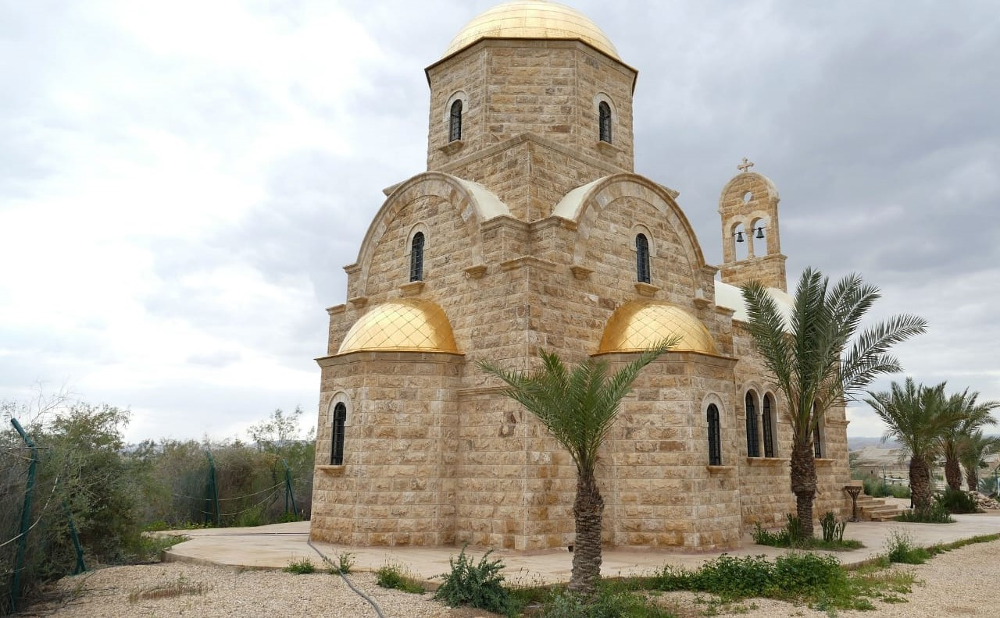
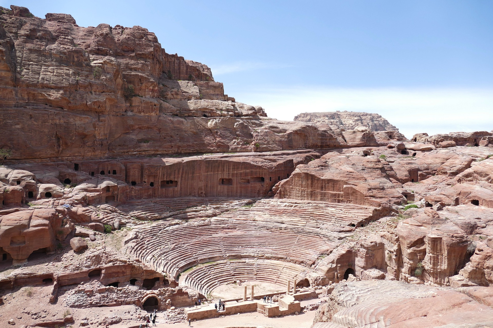

Jordan the treasures of history and nature
Its most famous landmark is Petra, a 2,000-year-old city carved into red sandstone cliffs. Other notable attractions include the Dead Sea, the Red Sea, and Wadi Rum desert. Jordan is also home to several ancient ruins and biblical sites, such as Jerash and Mount Nebo.
Jordan, located in the Middle East, is a country rich in history and cultural heritage that has gained significant importance as a tourist destination. The country is particularly known for its religious significance, being home to several sites of historical and cultural importance for both Christians and Muslims. However, it also offers a variety of attractions for general tourists looking to experience its unique culture and landscape. Here we aims to provide a comprehensive overview of the religious and general tourism offerings in Jordan and the significance of these sites for visitors.
Religious Tourism: Jordan is home to several important religious sites for Christians, including the Baptism Site, located on the east bank of the Jordan River, where it is believed that John the Baptist baptized Jesus. The site is a pilgrimage destination for Christians, particularly those belonging to the Eastern Orthodox Church.
The city of Madaba, located in central Jordan, is known for its Byzantine and Umayyad mosaics, including the Madaba Map, a 6th-century mosaic map of the Holy Land that is considered one of the oldest in the world. The city is a popular destination for religious tourists interested in the history of early Christianity in the region.
Jordan is also home to several important Islamic sites, including the Al-Karak Castle, located in the city of Al-Karak, which was an important center of Islamic civilization during the Crusades. The city of Al-Salt, located in central Jordan, is known for its rich cultural heritage, including traditional markets and Ottoman-era architecture.
General Tourism: In addition to its religious significance, Jordan offers a range of attractions for general tourists. The country is renowned for its unique desert landscape, including the Wadi Rum desert, a unique landscape of sandstone formations and rock formations that attract tourists for its beauty and historical significance. The area is also home to several Bedouin communities, offering tourists the opportunity to experience traditional Bedouin life and culture.
The city of Petra, located in southern Jordan, is a UNESCO World Heritage Site and one of the most famous tourist destinations in the country. The site is a complex of tombs, temples, and other buildings carved into the rock and is considered one of the most important archaeological sites in the world. The Petra Archaeological Park is a popular destination for tourists looking to experience the unique landscape and history of the region.
The Dead Sea, located on the border between Jordan and Israel, is a popular destination for tourists due to its unique geology and therapeutic properties. The sea is one of the saltiest bodies of water in the world and is believed to have therapeutic properties for skin conditions and other health issues. The area is also home to several resorts and spas, offering tourists the opportunity to relax and rejuvenate in a unique and beautiful setting.
Conclusion: In conclusion, Jordan is a unique destination that offers a blend of religious and cultural significance for tourists. The country is particularly known for its religious significance, being home to several sites of historical and cultural importance for both Christians and Muslims. However, it also offers a range of attractions for general tourists, including the unique desert landscape of Wadi Rum, the famous archaeological site of Petra, and the therapeutic properties of the Dead Sea.